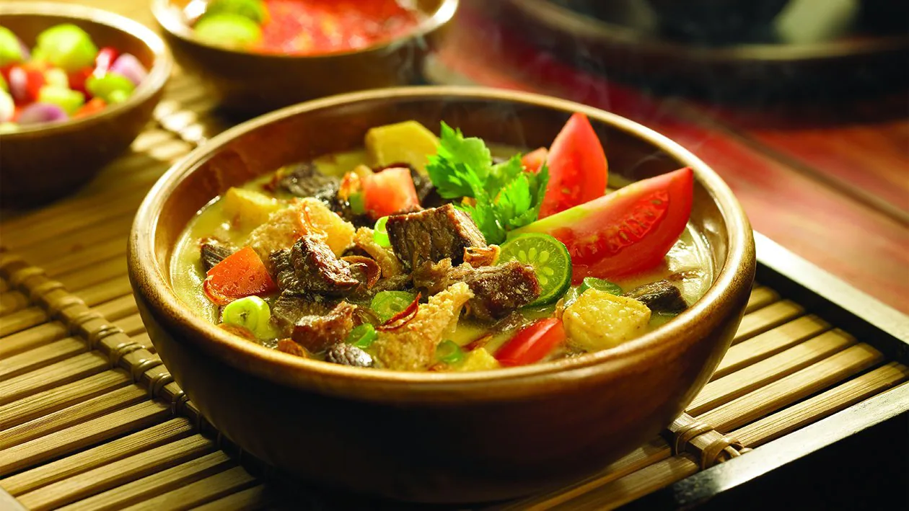

Soto Betawi

Deskripsi
Soto Betawi merupakan salah satu jenis soto khas Nusantara yang paling digemari. Berkuah putih dan cukup kental, soto Betawi ada yang terbuat dari santan kelapa atau susu. Tak ayal, menu ini identik dengan rasa gurih.
Bahan-Bahan
- 500 g daging sapi bagian sandung lamur, potong-potong
- 200 g babat sapi, rebus, potong 2x2 cm
- 200 g paru sapi, rebus, potong 2x2 cm
- 3 sdm Kecap Manis
- 3 cm kayu manis
- 1 sdt pala bubuk
- 4 butir cengkih
- 3 batang serai, memarkan
- 5 lembar daun jeruk, buang tulang, iris memanjang
- 2 cm lengkuas, memarkan
- 4 sdt garam
- 2 lembar daun salam
- 1 sdt gula pasir
- ½ sdt merica bubuk
- 500 ml santan dari 1 butir kelapa
- 2 sdm minyak, untuk menumis
- 2 L air
Bumbu Halus
- 12 butir bawang merah
- 6 siung bawang putih
- 3 butir kemiri, sangrai
- 2 cm jahe
- 1 sdt ketumbar bubuk
Bahan Pelengkap
- 2 buah tomat, potong dadu 2 cm
- 2 batang daun bawang, iris tipis
- 100 g bawang merah goreng
- 50 g emping goreng
- 4 buah jeruk nipis, belah jadi 2 bagian
Langkah Masak
- Rebus air dan daging hingga daging matang dan empuk. Potong dadu daging 3x3 cm.
- Saring kaldu rebusan daging, didihkan kembali dengan daging, paru, dan babat
- Panaskan minyak, tumis bumbu halus bersama pala, cengkih, kayu manis, serai, lengkuas, daun jeruk, dan daun salam hingga harum. Tuang tumisan bumbu ke air rebusan daging, aduk rata. Masak dengan api sedang hingga mendidih.
- Tuangkan santan, Bango Kecap Manis, garam, merica bubuk, dan gula pasir. Masak hingga matang
- Susun tomat dalam mangkuk, tuangkan soto, sajikan dengan bahan pelengkap lainnya
Home